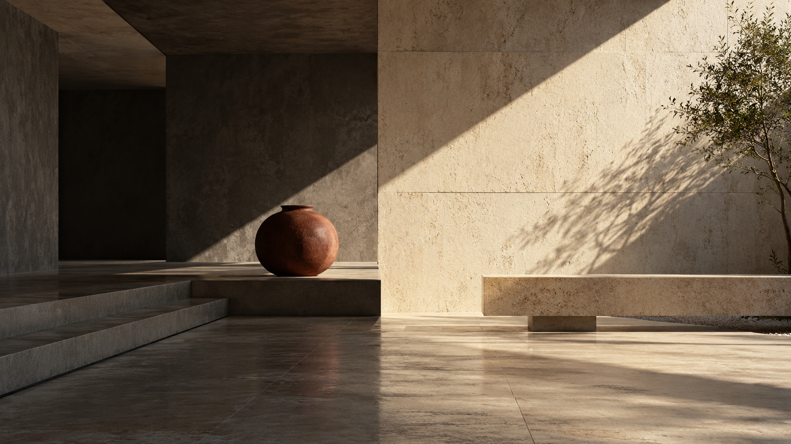

Curious thinking.
Precise making.
made by Kirat is positioned as an independent multidisciplinary studio: small enough to stay close to the work, broad enough to connect strategy, design and digital expression.

Different perspectives.
Thoughtfully made.
Every project begins by looking for the useful tension: what is familiar, what is distinctive and what deserves to be made visible. The work aims to be clear before it is clever, and distinctive without becoming noisy.
Capabilities span brand identity, graphic design, digital experiences, creative content and visual storytelling. The exact scope is shaped around the project rather than a fixed package.
Thoughtful
Decisions should have a reason, not just a style.
Distinctive
Recognition comes from a few strong choices used consistently.
Curious
Better work often starts by questioning the obvious answer.
From identity
to experience.
The studio can lead a focused identity project or build a wider visual system across campaign, content and digital touchpoints.
Branding
Positioning, visual identity, brand systems, guidelines and launch direction.
Graphic design
Print, campaign, presentation, editorial and visual communication.
Digital experiences
Web design, interface art direction, landing pages and digital brand expression.
Creative content
Concepts, content systems, art direction and visual storytelling.